We present a model that predicts Bitcoin's long-term value relative to Gold based on supply dynamics and adoption saturation. Gold's 2% annual supply growth dilutes existing holders; Bitcoin's supply is capped, with 95% already mined and the remainder released on a four-year halving cycle. This differential implies Bitcoin should outperform Gold by approximately 2% annually once adoption saturates. Our model captures the transition from exponential adoption to scarcity-driven growth using a saturating exponential with three free parameters. Fitted to 10 years of monthly data (2015–2024), the model achieves R2 = 0.91 and correctly predicts 13 months of held-out test data (2025–2026). The leftover scatter after fitting reveals a shift in how widely prices swing after January 2023: standard deviation fell from σ = 0.478 to σ = 0.258 (p < 0.0001), coinciding with significant geopolitical shifts in reserve-asset markets. The model projects Bitcoin will reach 37 oz Gold by 2030 (95% CI: 22–62 oz) and 43 oz by 2035 (95% CI: 26–72 oz), with expected annual outperformance of 8.6% relative to Gold over horizons long enough to ride out the ~30-month boom-bust cycles that ride the trend. These projections constitute falsifiable hypotheses about both trajectory and volatility.
Gold and Bitcoin both serve as scarce markers for value. One is perpetually diluted by additional supply. The other is not.
Does the difference in how they're mined explain Bitcoin's value trajectory relative to Gold? And if so, what does that imply for real returns and how central banks might rebalance their reserves?
This inquiry began with data and curiosity, not a thesis. The goal was to fit a model consistent with observable prices and simple, defensible assumptions about supply. The theory followed from the fit.
What emerged was a model of the long-term value of Bitcoin. Bitcoin adoption isn't reaching a saturation point; it's following a saturation curve. Modeling that curve tells us where it's likely to be headed.
The monthly prices of Bitcoin and Gold are public information. Figure 1 shows them over the last eleven years (January 2015 – February 2026). On a logarithmic scale, Bitcoin's exponential rise appears as an rising jagged line; Gold holds roughly flat.
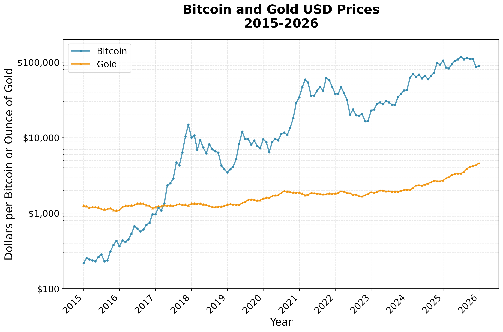
From these public data one may calculate the ratio: Bitcoin price in ounces of Gold (Figure 2).
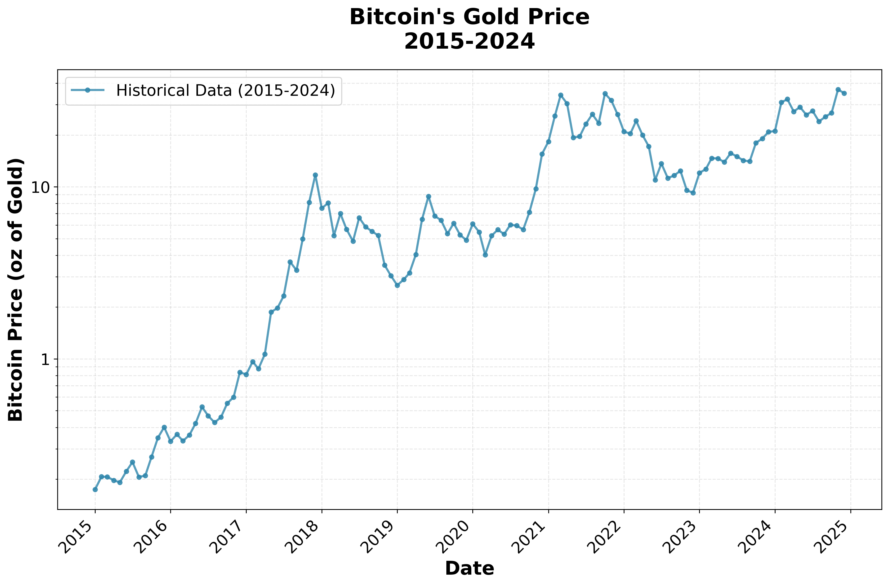
In 2017 one Bitcoin would buy about 1 oz of Gold. In 2023 it could buy about 10 ounces. Boom-bust cycles ride an upward curve. The curve rises steeply in early years and flattens later, hinting at saturation, not perpetual exponential growth. To what does it saturate?
Gold's above-ground stock grows by roughly 2% per year from mining. The dilution is small but eternal. Wait long enough and the stock grows without limit, diluting the buying power of a given ounce of Gold already held. Higher prices encourage more mining, which pumps supply back up, stabilizing the growth rate around 2%.
Bitcoin's supply is locked by mathematics, not policy. Mining rewards halve approximately every four years (the halving cycle), and the protocol automatically adjusts mining difficulty to hold the block rate steady at roughly one every 10 minutes. The maximum total supply is fixed at 21 million Bitcoins, with about 95% already in existence as of 2025. No authority can create more. Cryptography enforces this, not with a human promise, but with mathematical proof.
Bitcoin is decentralized across computers worldwide with no single controlling institution. It is becoming increasingly liquid at a consumer level, exchangeable for goods via networks like PayPal and Square [1].
Gold sits in bank vaults and broker accounts. A government can seize it with a phone call, as happened to Russia's central bank reserves in 2022 [2]. Bitcoin works differently. It lives on a device the holder controls and can be transferred globally without passing through any institution. Every transaction appears on a public ledger that anyone can verify. No phone call stops it. This carries its own dangers: lose the cryptographic key and the Bitcoin vanishes forever, with no institution capable of restoring it. The structural difference proves important, explored further in Section 8.
Gold's supply grows at 2% yearly, while Bitcoin's new supply approaches zero. These facts suggest a simple picture: the ratio should rise rapidly at first, then level off, approaching a steady 2% annual gain:
where:
The model therefore has only three free parameters: (C, A, λ). The 2% rate (g) comes from Gold's observed supply growth, not from fitting the data, a choice that keeps the model honest. This assumes the supply gap shows up as a price gap; the data say it does, but no pricing theory requires it.
The fitted parameters are sensible (Table 1). The adoption decay rate (λ = 0.283 yr−1) corresponds to a half-life of ln(2)/0.283 ≈ 2.4 years. The initial surge of adoption dampens quickly. Most of the explosive growth occurred in the first five to seven years (2015–2022). By 2025, four half-lives later, this adoption surge has largely faded. The continued outperformance of Bitcoin relative to Gold now reflects simply its relative scarcity.
| Parameter | Meaning | Estimate | |
|---|---|---|---|
| g | Asymptotic growth vs Gold | 0.020 | yr−1 (observed) |
| λ | Decay rate of adoption | 0.283 | yr−1 |
| A | Initial adoption rate | 5.62 | |
| C | Baseline | −2.25 |
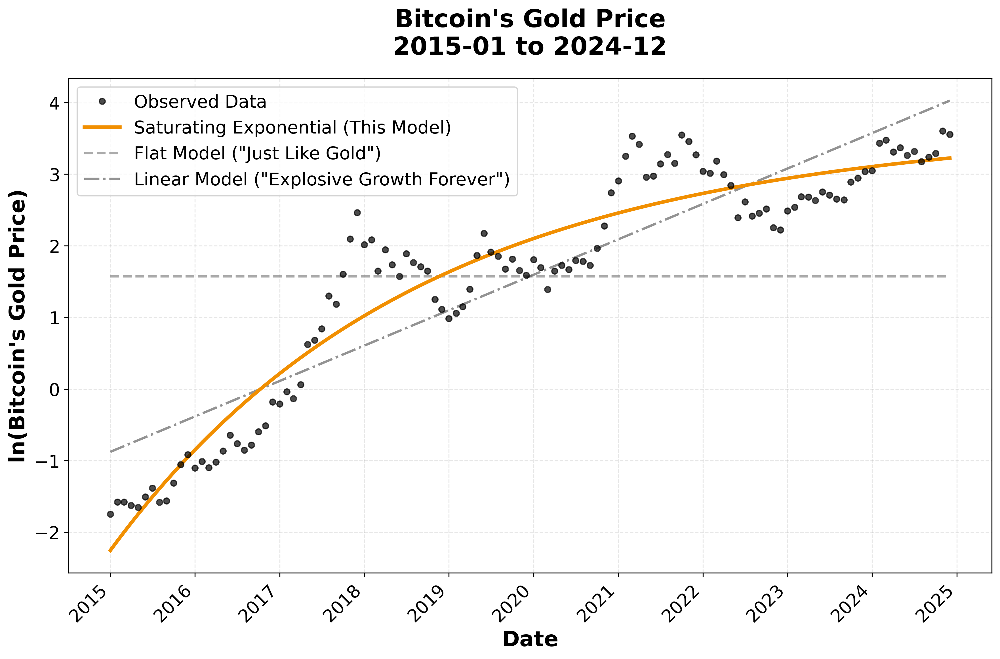
The saturating exponential leaves the smallest residuals and correctly captures the slowdown after 2018. It outperforms both the flat model (Bitcoin just follows Gold) and the log-linear model (Explosive growth forever).
| Model | Parameters | R2 | RMSE |
|---|---|---|---|
| Flat ("Just Like Gold") | 1 | 0.000 | 1.580 |
| Linear ("Explosive Growth Forever") | 2 | 0.812 | 0.687 |
| Saturating Exponential | 3 | 0.909 | 0.478 |
The scatter around the fitted curve defines error bands (Figure 4, dashed and dotted lines) that bracket the predicted values (Figure 4, orange line). Boom-bust cycles nudge the price away from the underlying trend. Each such cycle lasts roughly one to two years.
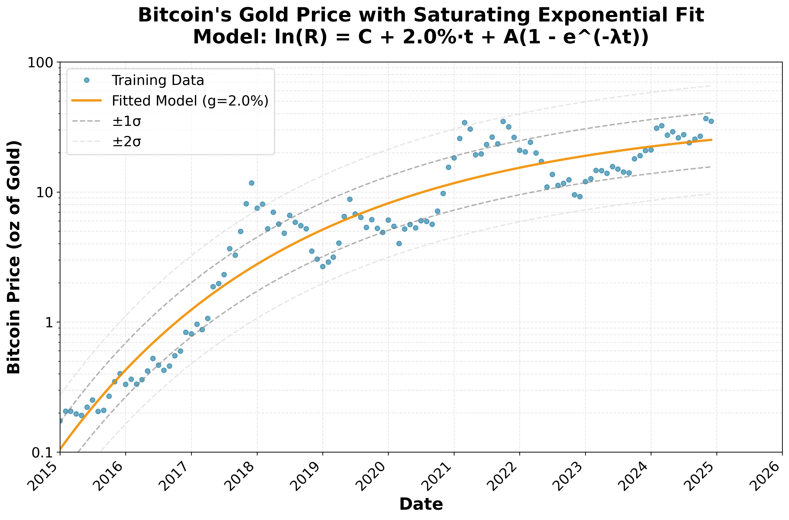
The analysis spans 67% of Bitcoin's entire history since 2009, capturing the shift from experimental technology to institutional asset. Earlier data were omitted because they reflect the discovery phase, not the mature market behavior the model is designed to capture.
Other ways to model Bitcoin's value exist: network effect models (Metcalfe's Law: value ∝ users2), stock-to-flow models based on Bitcoin's halving cycle, and regime-switching frameworks. Each has appeal, but each also has a flaw:
The saturating exponential achieves R2 = 0.91 with only three free parameters because g is fixed to Gold's observed supply growth (0.02), taken from real-world data, not optimized by the computer. This restraint keeps the model simple and accountable. The functional form embodies a clear picture: Bitcoin's early explosive adoption (A, λ terms) eventually saturates, leaving persistent outperformance driven purely by the supply differential (g term).
The question isn't "what's the most sophisticated model?" but "what's the simplest model that still works?" Any smooth curve fit to a trending series will produce a high R2. The model earns its keep not from the fit statistic but from predicting data it has never seen (Section 5) and making claims that future data can break (Sections 9 and 10).
The model was fit on data through December 2024. It knew nothing about what came next. Figure 5 shows what came next: thirteen months of Bitcoin's Gold value, through January 27, 2026, plotted as red squares. Every one of them falls close to the orange trend line, well within ±1σ. That is tighter than you would expect from chance alone, and it suggests the model is tracking something real rather than memorizing noise. (The unusually tight scatter may signal falling volatility, a possibility tested in Section 7.)
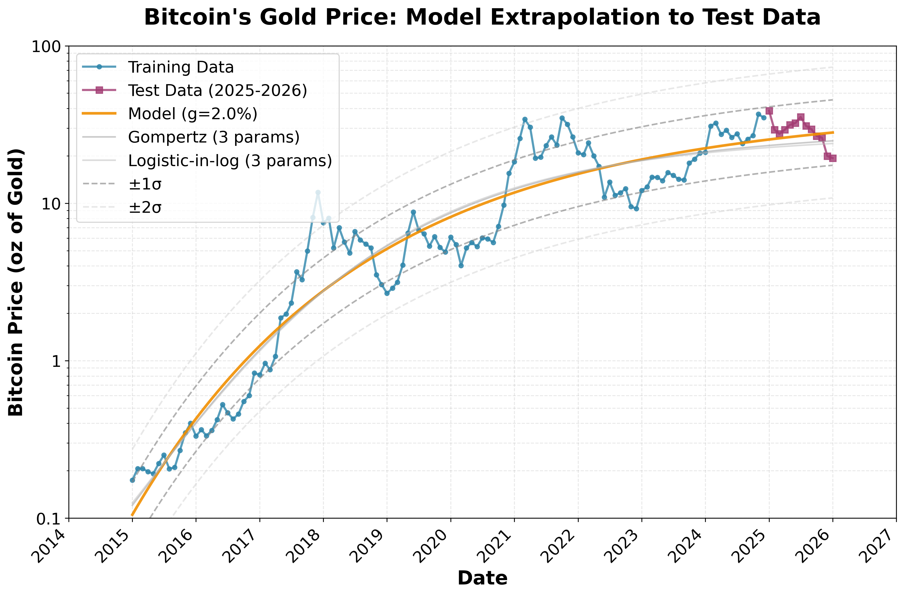
Good held-out performance is encouraging, but it raises a fair question: is the saturating exponential special, or would any S-shaped curve do just as well? To find out, we fit two alternative saturating forms to the same training data, each with three free parameters and g fixed at 0.02:
| Model | Params | R2 (train) | RMSE (train) | RMSE (test) | Test within 1σ |
|---|---|---|---|---|---|
| Flat | 1 | 0.000 | 1.584 | 1.785 | 2/13 |
| Linear | 2 | 0.812 | 0.687 | 1.017 | 1/13 |
| Saturating exponential | 3 | 0.909 | 0.478 | 0.222 | 13/13 |
| Gompertz | 3 | 0.911 | 0.473 | 0.264 | 12/13 |
| Logistic-in-log | 3 | 0.911 | 0.474 | 0.285 | 12/13 |
Look at the training columns first. All three saturating forms are nearly identical: R2 ≈ 0.91, RMSE around 0.47. If you only had training data, you could not tell them apart. Now look at the test columns. The saturating exponential has the lowest test RMSE (0.222) and is the only model that puts all 13 held-out points within 1σ. The Gompertz and logistic forms, which saturate more abruptly, systematically underpredict during the boom phase (Figure 5, faint lines). Giving them a fourth free parameter makes things worse; their test RMSE rises slightly, the signature of overfitting. So the choice of functional form is not cosmetic. Among models of equal or greater complexity, the one built on the supply-differential asymptote is the one that generalizes. Thirteen months of test data is short compared to a full boom-bust cycle of roughly 30 months, so Section 10 introduces a scorecard that accumulates evidence month by month over years.
Once you subtract the long-term trend, the residuals tell a story of their own. Look at Figure 5: the price rides above the orange line for a stretch, then drops below it. The most recent boom began in early 2024 and turned to bust around October 2025.
How regular is this cycle? Figure 6 answers the question with a simple trick. Take the residual at each month and compare it to the residual 15 months earlier. If booms and busts arrive on a schedule, then a high residual 15 months ago should correspond to a low one now, and vice versa. That is exactly what the data show: the lag-15 circular correlation is r = −0.55, the deepest trough in the entire autocorrelation function. The pattern repeats roughly every 30 months, about two and a half years from peak to peak. Of 133 months, 90 show opposite-sign residuals at the 15-month lag.
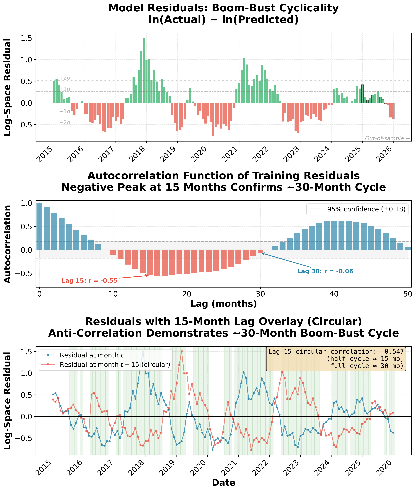
This cyclicality matters for everything that follows. The model predicts a trend, not a price on any given Tuesday. An investor who buys at the top of a boom and is forced to sell at the bottom of the next bust, roughly 15 months later, can lose money even if the model is perfectly correct. The projections in this paper (Sections 6 and 9) assume a horizon long enough to ride out at least one full cycle: three to five years at minimum, with the ability to sit through fifteen-month stretches of underperformance. Anyone who cannot wait that long is not investing on the trend. They are betting on which part of the cycle they happen to catch.
The model's predictions prove robust across different assumptions about annual Gold mining supply. Whether setting g = 1.5%, 2.0%, or 2.5%, the story a decade forward remains essentially unchanged.
These projected future values are favorable compared to Bitcoin's Gold price at the time of this publication (~13 oz Gold per BTC, 19 February 2026). The current value is about three standard deviations below the trendline, suggesting Bitcoin is currently priced well below trend.
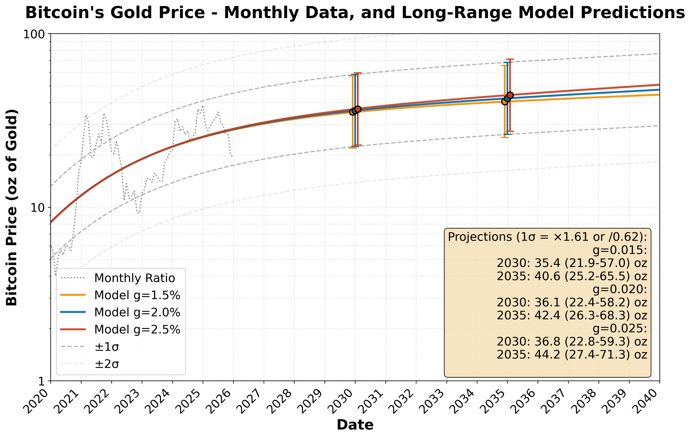
The model's insensitivity to the precise value of g (tested from 1.5% to 2.5%) demonstrates that its predictions depend primarily on the final throes of Bitcoin adoption rather than the exact magnitude of Gold's supply growth, making the framework robust to uncertainty in mining economics.
The model predicts Bitcoin will appreciate relative to Gold at an average compound rate of 8.6%/yr, roughly a 2.3× gain over the next decade.. The components of Bitcoin's expected return are:
| Component | Rate [%/yr] | Description |
|---|---|---|
| BTC vs Gold ratio growth | +8.6 | Model's core prediction for Bitcoin appreciation relative to Gold |
| Gold real drift | +2.0 | Gold's historical appreciation vs USD (above inflation) |
| CPI inflation | +2.5 | Assumed baseline inflation |
| Total nominal return | ≈ 13.1 | Bitcoin's expected USD appreciation |
The 8.6% annual appreciation comes from two sources: ongoing Bitcoin adoption and Gold's expanding supply against Bitcoin's fixed cap. The remaining return components—Gold's real drift and inflation—reflect external assumptions. This yields a projected real return of 10.6% annually.
Although Bitcoin's expected rate of return compares favorably to Gold, its volatility makes the return at any given moment uncertain. Projecting Bitcoin's historical volatility into the future produces predictions with a wide range:
The estimates span more than two-fold, yet capture only 68% of outcomes, an unsatisfying level of precision.
The volatility itself, however, is diminishing. As Bitcoin progresses along its adoption curve, price swings narrow and the market stabilizes. The next section examines this pattern.
Volatility becomes visible in the residuals: the boom-bust cycles riding atop Bitcoin's upward trend relative to Gold. The analysis shows that the amplitude of these cycles decreases over time as Bitcoin becomes established.
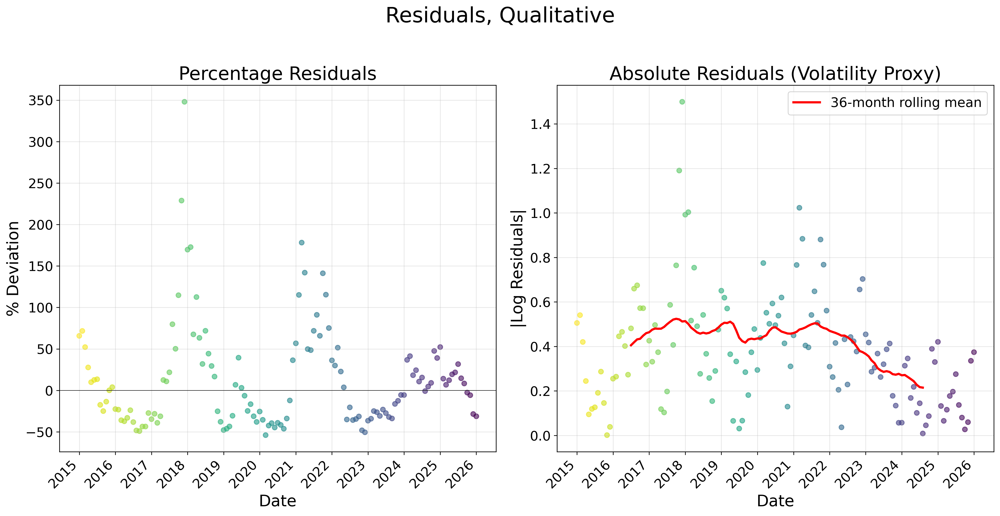
A qualitative trend toward declining volatility is evident in the data, with scatter decreasing noticeably after 2023 (Figure 8, left, post-2023 points). For a more quantitative view that treats doublings and halvings equally, the data are switched to a logarithmic scale (Figure 8, right). Absolute values of the excursions are plotted so that both decreases and increases of value show as positive volatility. A 36-month rolling average reveals the volatility trend over time (Figure 8, right, red line).
When the entire data series is fit (Figure 9, left), the trend toward decreased volatility is evident (R2 = 0.6419), and statistically significant (p < 0.0001). A linear fit of the 36-month rolling average shows a volatility decline of about 0.033 per year. The statistics confirm that the system is stabilizing as adoption progresses.
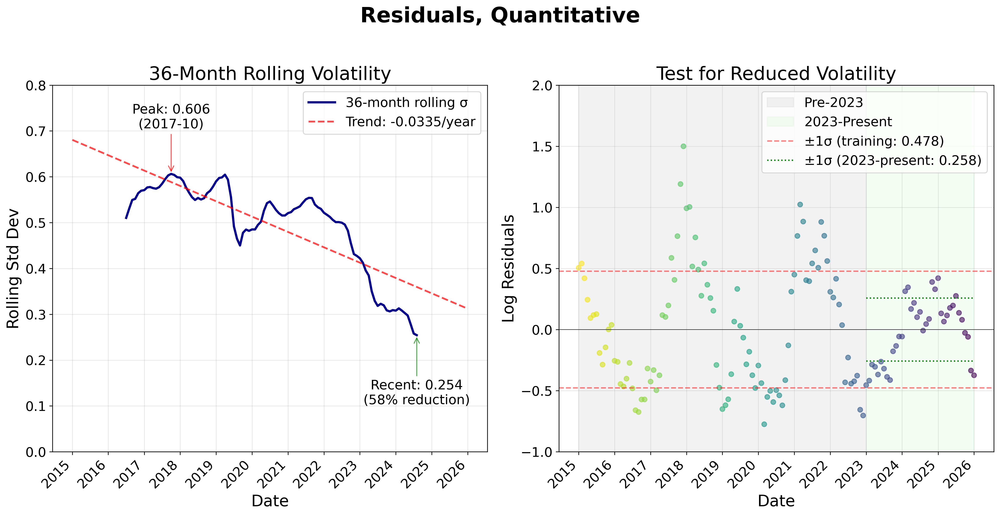
Volatility declines, but toward what value? Obviously, it does not go to zero; the model will never be perfect. To find an approximate value for recent volatility, the data are divided into two parts: pre-2023 and 2023-present (Figure 9, right). A Levene Test compares the variance before and after 2023, and finds the difference to be statistically significant:
The January 2023 breakpoint was chosen after looking at the data, not before. The statistical significance should be read with that in mind.
Fresh ±1σ error bounds (Figure 9, right, green dotted lines) are tighter than error bounds based on the training data (Figure 9, right, red dotted lines). Post-2023 data justify forecasting Bitcoin's future value in ounces of Gold (initially estimated in Figure 7) with these tighter bounds.
The data show volatility is stabilizing. The variance drop is large (p < 0.0001), but the January 2023 breakpoint was chosen after inspection, so the p-value is descriptive, not confirmatory. Statistics don't explain causes. A 58% drop doesn't just happen. Something shifted in how the world treats Bitcoin. The timing points to a specific event.
Beginning in 2023, Bitcoin's volatility behavior changed in a way that mirrors a cascade of geopolitical and regulatory shifts that fundamentally altered its institutional status [3].
We argue that the trigger was February 2022: Western governments froze $300 billion in Russian central bank reserves following the Ukraine invasion [2]. For the first time, the dollar itself became a weapon. Non-aligned nations noticed. Central banks, which had been purchasing about 500 tons of Gold annually before this trigger approximately doubled their purchases, to 1,082 tons of Gold in 2022, then 1,037 tons in 2023, and 1,045 tons in 2024, making three consecutive years exceeding 1,000 tons for the first time in history [4].
Bitcoin benefited from the same rush toward assets that governments could not easily freeze. The January 2023 shift in volatility aligns with a natural delay: large institutions move slowly after a geopolitical shock.
The 2024 U.S. election accelerated what geopolitics had initiated. The January 2024 approval of spot Bitcoin ETFs opened floodgates [5]. Following the November election, Bitcoin rose from $68,000 to over $100,000 without significant pullbacks. The March 2025 Executive Order establishing a Strategic Bitcoin Reserve formalized what markets had already recognized: Bitcoin had become a legitimate reserve asset.
This political legitimization catalyzed corporate treasury adoption. Over 80 publicly traded companies now hold Bitcoin, up from 58 just two years prior, a 38% increase [6]. Microsoft shareholders may have voted down a Bitcoin allocation, but companies controlling 1.3 million BTC didn't wait for permission [7]. When Trump Media purchased $2 billion in Bitcoin securities and the White House appointed a crypto czar, the reputational risk that kept Fortune 500 CFOs away evaporated.
Several nations are on the cusp of establishing Bitcoin reserves, led by the U.S. with an executive order 2025-03. Brazil, Czechia, Switzerland, Japan, and Poland have active legislative proposals [8]. China, which already holds approximately 190,000 BTC from seizures, is rumored to be accelerating its own strategic reserve efforts [9]. Three U.S. states—New Hampshire, Arizona, and Texas—have already passed legislation establishing state-level Bitcoin reserves [10]. Basel Committee rules now cap bank exposure to cryptoassets as a fraction of Tier 1 capital, with implementation targeted for January 2025.
The truth can never be known for certain; this may simply be a story told after the fact to explain what happened. But σ falling from 0.478 to 0.258 captures something real. De-dollarization and institutional adoption are plausible drivers.
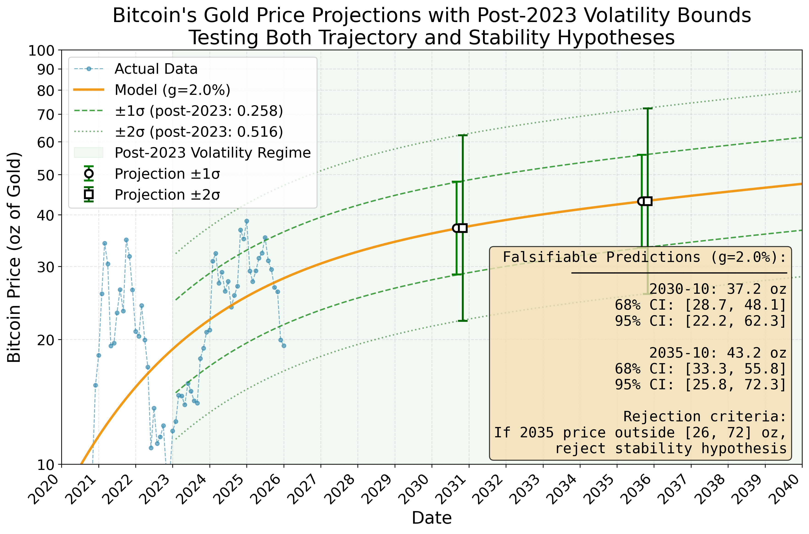
For the modeler, this price projection (Figure 10) embodies two independent, falsifiable claims:
The predicted price targets are:
With tighter error bounds, the range is still broad (26 to 72 oz of Gold per Bitcoin), but all of it lies above today's Bitcoin Gold price (about 13 ounces at the time of this publication), and now that span captures 95% of the expected values, not just 68%. These bounds reflect the observed scatter of prices around the trend, not formal prediction intervals that propagate parameter uncertainty. They describe where the ratio has historically wandered, not where a fully specified stochastic model says it will go.
Bitcoin and Gold function as reserve assets: pools of value held as insurance against rare, catastrophic events like wars, pandemics, sovereign defaults, hyperinflation, or financial collapses.
This risk is not theoretical. Weimar Germany (1923), the Soviet Union (1991), Argentina (2001), Zimbabwe (2008), Greece (2010–2015), and Venezuela (2016–present) [13] all show how monetary stability can evaporate: "Gradually and then suddenly" [14]. At this writing, interest on U.S. federal debt consumes 20% of federal receipts and is projected to reach 30% within ten years [15]. Hyperinflation, outright default, or prolonged stagnation (as Japan experienced from 1991–2010) remain possible responses. The de-dollarization trend, which began gradually in the 1990s, has accelerated dramatically since 2022, calling into question the dollar's role as global reserve currency.
Crisis probability is genuinely uncertain. Those confident in stability might hold 3% in reserves; those fearing instability might hold 50%.
Whatever the bucket size, a key question remains: Within that reserve bucket, what proportion should be Bitcoin versus Gold?
The Kelly criterion [16] provides a mathematically optimal answer. In its continuous-time form, derived from Geometric Brownian Motion (GBM), the price process is modeled as dS/S = μ dt + σ dW, where μ is the expected arithmetic return and σ is the volatility of log returns. The optimal fraction to allocate is:
where:
Here Gold serves as the baseline within the reserve bucket. Bitcoin is the growth option relative to that baseline.
The GBM derivation requires μ and σ on the same timescale. The post-2023 residuals (Section 7) have a standard deviation of σlevel = 0.258 in log space, but this measures scatter around the trend at any given month, not the volatility of annual returns. Section 5 established that residuals exhibit lag-1 autocorrelation ρ = 0.90; that is, each month's deviation from trend largely persists into the next month (a first-order autoregressive process). To convert level scatter to an annualized return volatility, we account for the persistence:
This yields: f* = 0.0858 / 0.3062 ≈ 0.92
The full Kelly allocation is approximately 92% Bitcoin, 8% Gold. Conservative practitioners often use Half-Kelly (46% Bitcoin) or Quarter-Kelly (23% Bitcoin), choosing reduced exposure while staying data-informed. All Kelly fractions assume the holder rides out full boom-bust cycles without selling. An investor who capitulates during a trough is no longer following the strategy the math describes.
The framework separates two independent decisions:
This allows investors with widely different macro views to apply the same allocation framework within their chosen reserve position.
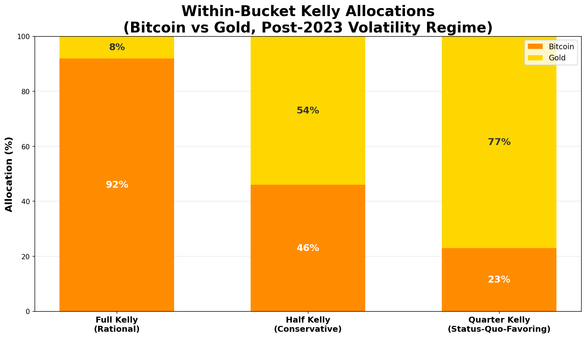
Important Context: The Kelly criterion assumes perfect model accuracy. In practice:
For an investor with a ten-year horizon, long enough to ride out several boom-bust cycles, buying at today's ratio (19 February 2026, ~13 oz Gold per Bitcoin) the model makes actionable predictions for 2035:
Critical Limitation: This calculation assumes our model parameters are known with certainty. In reality, μ and σ are educated guesses made from limited data. While the U.S. Strategic Reserve and institutional adoption suggest a regime change, monetary history counsels caution; the Bretton Woods system seemed permanent until 1971 [11], and Gold was demonetized until central banks reversed course. Bitcoin's post-2023 low volatility regime spans only 2 years and may not persist. When parameter uncertainty is high, the right bet size can be much smaller than the formula says, which is why practitioners commonly use Half-Kelly or Quarter-Kelly. Given that even legitimate monetary regime changes can reverse (see: Gold's 1980–2000 bear market [12]), fractional Kelly isn't just conservatism. It is a hedge against the unknowns of the future.
Saying “Bitcoin will be worth 37 oz of Gold by 2030,” is a prediction, but it takes four years to find out if it's wrong. A better test keeps score as it goes. Each month, the model's error is measured, standardized, and added to a running total. If that total drifts too far from zero, the model is broken.
The standardized monthly score divides each error by the residual scatter (σ) to put every month on the same footing:
If the model is correct, these scores bounce around zero with a spread of about 1 and accumulate like a random walk. The running total Sn = Σzi is plotted against rejection boundaries at ±c√n, calibrated by simulation (2 million trials, 120 monthly looks, α = 0.05) so that a correct model has only a 5% chance of ever crossing them.
But which σ belongs in the denominator? The paper advances two independent claims. The trajectory hypothesis says Bitcoin follows the saturating exponential path. The reduced volatility hypothesis says the post-2023 low-volatility regime (σ = 0.258) persists. If the z-scores are computed with σ = 0.258 and the running total crosses a boundary, either claim could be wrong: the trajectory (numerator too large) or the volatility assumption (denominator too small). Disentangling the two requires a second boundary computed with the full-sample scatter (σ = 0.478, the model's residual standard deviation across the entire 2015–2024 training period), which tests the trajectory alone without assuming anything about the volatility regime.
Section 5 showed that the boom-bust cycles last about 30 months, with lag-1 autocorrelation ρ = 0.90. A bad month tends to be followed by more bad months. This means the running total wanders further just by luck, the way a drunk who staggers in the same direction for a while covers more sideways ground than one who staggers randomly at each step. The iid boundary (c = 2.625), which assumes each month is a fresh coin flip, would ring false alarms too often. The autocorrelation-corrected boundaries are wider, keeping the false-alarm rate at 5% even when boom or bust conditions persist. For the reduced volatility test, c = 8.50 (about 3.2× the iid value). For the trajectory test using the full-sample σ, c = 15.9.
Figure 12 shows the result as three colored zones. Inside the purple dashed boundaries (reduced volatility boundary, σ = 0.258, c = 8.50), both hypotheses are supported: the green zone. Between the purple and red dashed boundaries (trajectory boundary, σ = 0.478, c = 15.9), the reduced volatility hypothesis fails but the trajectory remains intact: the yellow zone. Outside the red dashed boundaries, both hypotheses are rejected: the red zone. The gray dashed iid boundary (c = 2.625) is shown for reference. Green data points mark months when Bitcoin outperformed the model; brown points mark months when it underperformed. The rising green points trace the tail end of the latest boom. The brown points are the subsequent bust, pulling the running total back toward the baseline.
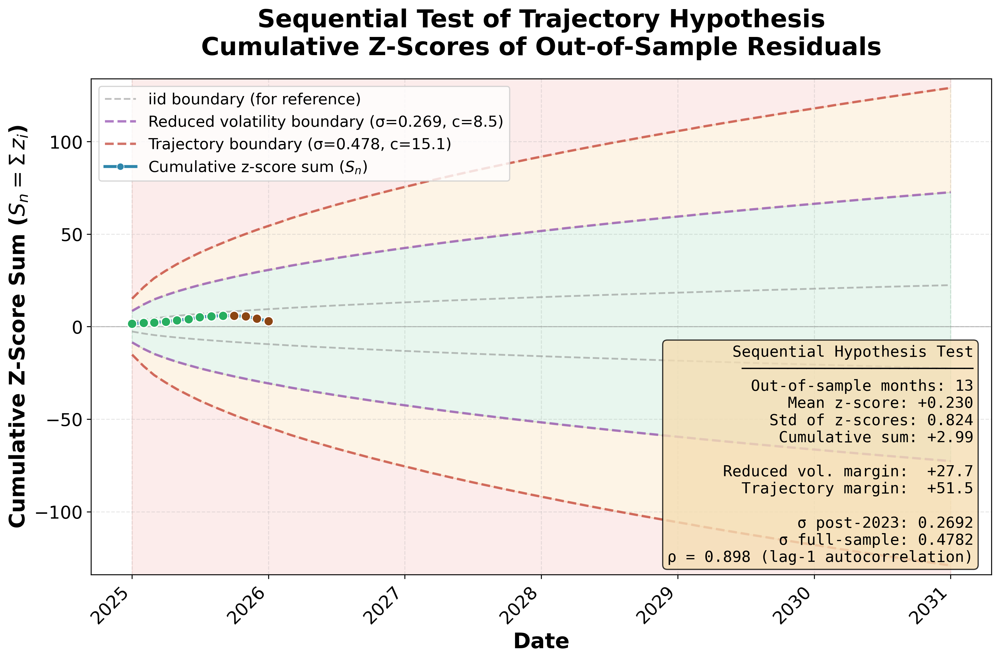
After 14 months (January 2025 through February 2026), the running total sits at Sn = +0.93, comfortably in the green. The monthly scores average +0.07 with a spread of 1.06, almost exactly what a correct model predicts (μ = 0, σ = 1). The nearest reduced volatility boundary is 8.9 away; the nearest trajectory boundary is 30.9 away. There is plenty of room.
As of mid-February 2026, Bitcoin's Gold price has fallen to approximately 13 oz, well below the model's trendline. The model expects such dips. The boom-bust cycles documented in Section 5 produce sustained deviations in both directions, and a downturn that pushes the cumulative score back toward the baseline validates the model rather than disqualifying it.
What would it take to actually reject the trajectory? At the current ratio of 13 oz, sustained flatness would need to persist for approximately 32 months (through late 2028) before the running total crossed the outer trajectory boundary. A sharper decline would trigger rejection sooner: at 8 oz, roughly 18 months; at 5 oz, roughly 12 months. We note these thresholds now, before any such excursion occurs, so that they stand as predictions rather than post-hoc rationalizations. This scorecard will be updated periodically to see if the model remains valid. The latest results are available at: https://github.com/silmonbiggs/BTCvGold/blob/master/SCORECARD.md
Prior work—from Deutsche Bank [17], Fidelity [18], WisdomTree [19], NYDIG [20], and academic research [21]—recognizes the Bitcoin–Gold parallel but lacks four ingredients: a mathematical treatment of the supply difference, the adoption curve's time constant, the average duration of the boom-bust cycles, and documentation of the volatility drop since 2023.
This analysis supplies those missing pieces with a simple model linking adoption speed and supply constraints to Bitcoin's value trajectory. The model makes quantitative predictions that match historical data.
Starting from open data and simple assumptions, the analysis demonstrates that Bitcoin's value relative to Gold traces a measurable, saturating trajectory. The model captures Bitcoin's shift from speculative investment to established store of value.
The price of Bitcoin at the time of this white paper (13 oz Gold per Bitcoin on 19 February 2026) is about three standard deviations below the trendline, consistent with the bust phase of a boom-bust cycle the model anticipates.
In contrast to crypto predictions that feign false certainty, this analysis acknowledges uncertainty, quantifies it, and uses it to inform a directionally robust claim about the future.
With 95% of Bitcoins mined, the era of 10× moves is ending. The era of sustainable outperformance is beginning.
Bitcoin's rise is not speculative mania. It's adoption, stabilization, and scarcity doing what they always do: moving stored value from metal to math.
The following supplementary materials are available to reproduce and extend this analysis:
Training Dataset: Gold and Bitcoin monthly prices from January 2015 through December 2024
File: btc_gold_training_2015_2024.csv (117 observations)
Test Dataset: Gold and Bitcoin monthly prices from January 2025 through January 2026
File: btc_gold_test_2025(&26Jan).csv (13 observations)
Python Implementation: Complete analysis pipeline including data processing, model fitting, statistical tests, and figure generation
File: btc_gold_analysis_rev14.py
Requirements: numpy, pandas, scipy, matplotlib, datetime
Sequential Testing Script: Out-of-sample z-score computation, CUSUM trajectory testing, and autocorrelation analysis
File: oos_zscore_cusum.py
Companion data: btc_gold_update.csv (post-publication monthly updates)
Analysis Output: Numerical results, model parameters, and statistical test outcomes
File: analysis_results.txt
Data Preprocessing: Monthly Bitcoin and Gold prices were collected from public sources. Gold prices were primarily sourced from the World Gold Council's public dataset on GitHub [22] for January 2015 through June 2025. The final seven months (July 2025 – January 2026) were supplemented with data from Yahoo Finance [23]. Bitcoin prices were obtained from CoinGecko's historical data [24]. Prices were converted to a Bitcoin/Gold ratio (ounces of Gold per Bitcoin) and log-transformed for modeling.
Model Fitting: The saturating exponential model ln(R(t)) = C + gt + A(1 − e−λt) was fit using nonlinear least squares (Levenberg-Marquardt algorithm) via scipy.optimize.curve_fit. The Gold supply growth rate g was fixed at 0.02, leaving three free parameters (C, A, λ).
Volatility Analysis: Residuals were split at January 2023. A Levene test compared pre- and post-2023 variances (p < 0.0001). Rolling 36-month standard deviations quantified the volatility trend (−0.033/year decline rate).
Projections: Future values were projected using fitted parameters. Confidence intervals used the post-2023 volatility (σ = 0.258) for ±1σ and ±2σ bounds. Sensitivity analysis tested g = 1.5%, 2.0%, and 2.5% supply growth rates.
All data and code necessary to reproduce the results in this paper are available at: https://github.com/silmonbiggs/BTCvGold
The repository includes:
I'm a Ph.D. scientist/engineer with 40+ patents and publications (Google Scholar). I built this framework while deciding on my personal retirement allocations.
The author wishes to thank the creators of Claude Code (powered by Claude Opus 4.5) for their contributions to coding, data analysis, and presentation of this work, and to Anthropic Inc., for organizing their efforts into a capable investigative partner.
[1] Square. Square brings Bitcoin to main street with first integrated payments solution, 2025. https://squareup.com/us/en/press/square-bitcoin. Accessed January 2026.
[2] CNBC. U.S. and allies freeze Russian central bank assets, February 2022. https://www.cnbc.com/2022/02/28/biden-administration-expands-russia-sanctions-cuts-off-us-transactions-with-central-bank.html
[3] Michael Shore. Why Bitcoin's relationship with equities has changed, 2025. https://www.cmegroup.com/openmarkets/economics/2025/Why-Bitcoins-Relationship-with-Equities-Has-Changed.html. CME Group Open Markets.
[4] World Gold Council. Gold demand trends full year 2024, 2025. https://www.gold.org/goldhub/research/gold-demand-trends/gold-demand-trends-full-year-2024/central-banks. Central Banks and Other Institutions Statistics.
[5] U.S. Securities and Exchange Commission. Order approving proposed rule changes for spot Bitcoin exchange-traded products, January 2024. https://www.sec.gov/newsroom/speeches-statements/gensler-statement-spot-bitcoin-011023
[6] BitcoinTreasuries.NET. Corporate Bitcoin treasuries: A comprehensive list, 2025. https://bitcointreasuries.net/. Accessed October 2025.
[7] River Financial. Bitcoin ownership report: August 2025, 2025. https://blog.river.com/tag/river-research/
[8] Decrypt. Bitcoin is flying high—these countries are considering a national reserve, December 2024. https://decrypt.co/294154/bitcoin-national-reserve-countries
[9] Crypto Briefing. China rumored to actively work on strategic Bitcoin reserve, 2025. https://cryptobriefing.com/china-strategic-bitcoin-reserve/
[10] Proskauer Rose LLP. Crypto in the capitol: States take the lead on strategic Bitcoin reserves, July 2025. https://www.proskauer.com/blog/crypto-in-the-capitol-states-take-the-lead-on-strategic-bitcoin-reserves
[11] Michael D. Bordo. The Bretton Woods international monetary system: A historical overview. In Michael D. Bordo and Barry Eichengreen, editors, A Retrospective on the Bretton Woods System. University of Chicago Press, 1993. https://www.nber.org/system/files/chapters/c6867/c6867.pdf
[12] World Gold Council. Gold price history and analysis: 1970-2024, 2024. https://www.gold.org/goldhub/data/gold-prices
[13] Carmen M. Reinhart and Kenneth S. Rogoff. This Time Is Different: Eight Centuries of Financial Folly. Princeton University Press, 2009. https://press.princeton.edu/books/paperback/9780691152646/this-time-is-different
[14] Ernest Hemingway. The Sun Also Rises. Charles Scribner's Sons, 1926.
[15] Congressional Budget Office. The budget and economic outlook: 2024 to 2034, February 2024. https://www.cbo.gov/publication/59710
[16] J. L. Kelly. A new interpretation of information rate. Bell System Technical Journal, 35(4):917–926, 1956. doi: 10.1002/j.1538-7305.1956.tb03809.x
[17] Deutsche Bank Research. Bitcoin vs Gold: The future of central bank reserves, 2025. https://www.dbresearch.com/PROD/RPS_EN-PROD/PROD0000000000603643
[18] Fidelity Digital Assets. Bitcoin as an aspirational store of value revisited, 2024. https://www.fidelitydigitalassets.com/research-and-insights/bitcoin-aspirational-store-value-revisited
[19] WisdomTree. Bitcoin and Gold: 3 model forecasts for 2030 and beyond, 2025. https://www.wisdomtree.eu/-/media/eu-media-files/other-documents/research/whitepapers/bitcoin-and-gold-3-model-forecasts-for-2030-and-beyond.pdf
[20] Greg Cipolaro. Comparing Bitcoin and Gold, 2025. https://www.nydig.com/research/comparing-bitcoin-and-gold
[21] Helene Zwick and Sarfaraz Syed. Bitcoin and Gold prices: A fledging long-term relationship. Theoretical Economics Letters, 9:2516–2525, 2019. https://www.scirp.org/journal/paperinformation?paperid=95629
[22] World Gold Council. Gold prices monthly dataset, 2025. https://raw.githubusercontent.com/datasets/gold-prices/main/data/monthly.csv. GitHub repository.
[23] Yahoo Finance. Gold futures historical data (GC=F), 2025. https://finance.yahoo.com/quote/GC=F
[24] CoinGecko. Bitcoin historical data, 2025. https://www.coingecko.com/en/coins/bitcoin/historical_data